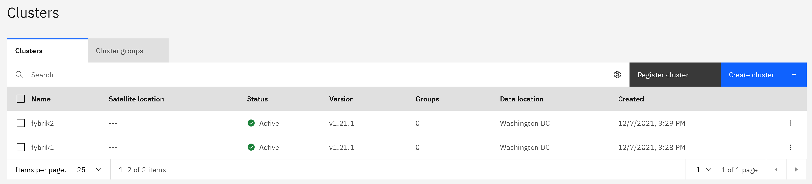

Multicluster setup
Fybrik is dynamic in its multi cluster capabilities in that it has abstractions to support multiple different cross-cluster orchestration mechanisms. Currently only one multi cluster orchestration mechanism is implemented and is using Razee for the orchestration.
Multicluster operation with Razee
Razee is a multi-cluster continuous delivery tool for Kubernetes that can deploy software on remote clusters and track the deployment status of such deployments. There are multiple ways to run Razee. The two described here are a vanilla open source deployment on your own Kubernetes or as a managed service from a cloud provider. Due to the complex nature of installing Razee a managed service from a cloud provider is recommended. It's possible to define a multicluster group name that groups clusters that are used in a Fybrik instance. This will restrict the clusters that are usable in the Fybrik instance to the ones that are registered in the specified Razee group. This is especially helpful if Razee is also used for different purposes than Fybrik or multiple Fybrik instances should be used under the same Razee installation.
In general there is a need for the following Razee components to be installed:
- Razee watch keeper (installed on all clusters)
- Razee cluster subscription manager (installed on all clusters)
- RazeeDash API (installed on coordinator cluster/as cloud service)
Both methods below describe how the above components can be installed depending on what RazeeDash deployment method is used.
Installing Razee on Kubernetes
Coordinator cluster
An installation of the open source components is described here. Please follow the instructions in the Razee documentation to install RazeeDash, Watch keeper and the cluster subscription agent. At the moment Razee supports GitHub, GitHub Enterprise and BitBucket for the OAUTH Authentication of this installation.
Please be aware that the RazeeDash API needs to be reachable from all clusters. Thus there may be the need for routes, ingresses or node ports in order to expose it to other networks and clusters.
Once RazeeDash is installed the UI can be used to group registered clusters in a multicluster group that can be configured below. The API Key can also be retrieved from the UI following these two steps.
- From the RazeeDash console, click the arrow icon in the upper right corner. Then, select Profile.
- Copy the API key value. If no API key exists, click Generate to generate one.
In order to configure Fybrik to use the installed Razee on Kubernetes the values of the helm charts have to be adapted to the following:
coordinator:
# URL for Razee deployment
url: "https://your-razee-service:3333/graphql"
# Razee deployment with oauth API key authentication requires the apiKey parameter
apiKey: "<your Razee X_API_KEY>"
multiclusterGroup: "<your group name>"
Remote cluster
The remote clusters only need the watch keeper and cluster subscription agents installed. The remote clusters do not need the coordinator component of Fybrik. It's enough to follow this guide to install the agents and configure a group via the RazeeDash UI if needed. The coordinator configuration would look like the following:
coordinator:
enabled: false
Installing using IBM Satellite Config
When using IBM Satellite Config the RazeeDash API is running as a service in the cloud and all CRD distribution is handled by the cloud. The process here describes how an already existing Kubernetes cluster can be registered and configured.
Prerequisites:
- An IBM Cloud Account
- IBM Cloud Satellite service
- IAM API Keys with access to IBM Cloud Satellite service

The step below has to be executed for each cluster that should be added to the Fybrik instance. This step is the same for coordinator and remote clusters.
- In the IBM Satellite Cloud service under the Clusters tab click on Register cluster.
- Enter a cluster name in the popup dialog and click Register cluster. (Please don't use spaces in the name)
- The next dialog will offer you a
kubectlcommand that can be executed on the cluster that should be attached. - After executing the
kubectlcommand the Razee services will be installed in therazeedeploynamespace and the cluster will show up in your cluster list (like in the picture above). This installs the watch keeper and cluster subscription components.
The next step is to configure Fybrik to use IBM Satellite config as multicluster orchestrator. This configuration is done via a
Kubernetes secret that is created by the helm chart. Overwriting the coordinator.razee values in your deployment will make use of the
multicluster tooling.
A configuration using IBM Satellite Config would look like the following for the coordinator cluster:
coordinator:
# Configures the Razee instance to be used by the coordinator manager in a multicluster setup
razee:
# IBM Cloud IAM API Key of a user or service account that have access to IBM Cloud Satellite Config
iamKey: "<your IAM API KEY key>"
multiclusterGroup: "<your group name>"
For the remote cluster the coordinator will be disabled:
coordinator:
enabled: false